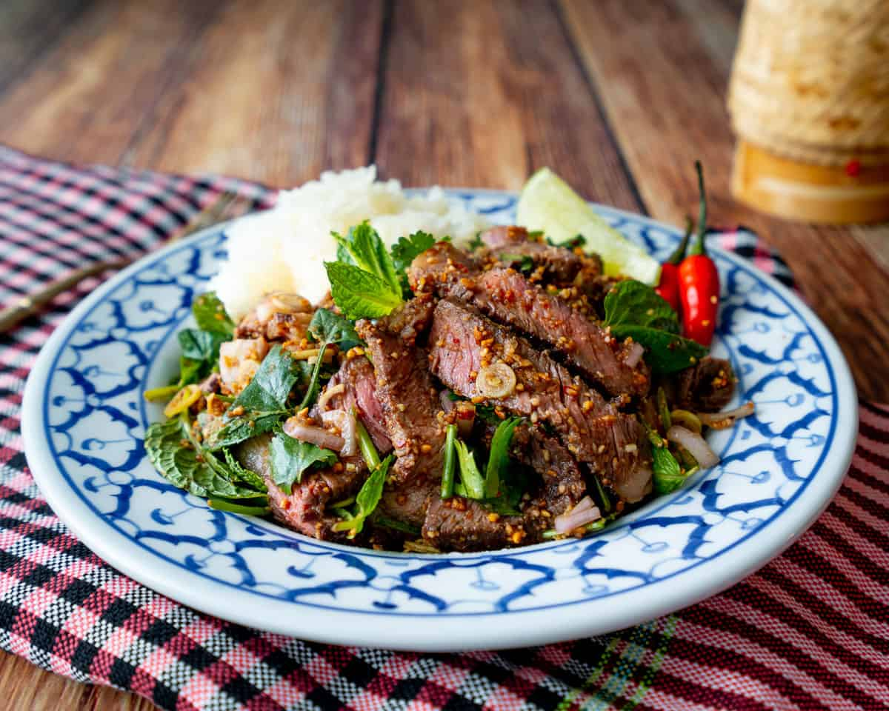

Nua Nam Tok (น้ำตก) - Spicy Grilled Beef Salad

Description
Nua nam tok is a steak salad from the northeast of Thailand. The salad is
mostly made of steak, with only fresh herbs and dressing added. It is
typically served with sticky rice.
Nam tok literally translates to waterfall, referring to the juice falling
from the meat when it is being grilled. Most of the obscure ingredients
can be ordered online or found at a large Asian grocery store.
Ingredients
- 1 lb steak (NY Strip, sirloin, ribeye or skirt steak
- 2 tablespoons thin soy sauce
- 1 teaspoon freshly ground black pepper
- ½ stalk of lemongrass, sliced diagonally
- 1 tablespoon cooking oil
- 1 tablespoon fish sauce
- 1½ teaspoons palm sugar
- Fresh juice from ½ a lime
- 1 to 2 tablespoons dried Thai chili flakes
- 1 teaspoon toasted sticky rice powder
- 1 small shallot
- 1 green onion
- A handful of cilantro
- A handful of mint
-
In a mixing bowl, combine the steak, soy sauce, black pepper, and
lemongrass. Coat the steak evenly with soy sauce and black pepper. Cover
tightly with plastic wrap and marinate 20 for minutes at room
temperature.
-
Cook the steak for 3 to 4 minutes on each side. Don't forget to sear the
sides of the steak as well. Remove from the grill and let the steak rest
for 5 minutes.
-
While the steak is cooling, slice the shallots thinly, chop the green
onion and cilantro. Prepare the mint by removing the leaves from the
stems.
- Slice the steak into ¼-inch thick pieces
-
In a large mixing bowl, whisk together the fish sauce, palm sugar, lime
juice and chili flakes. Stir in the sliced steak along with the toasted
rice powder. Toss until the steak pieces are evenly coated with
dressing.
-
Finally, toss in all of the vegetables prepared in step three. Transfer
to a serving plate and garnish with toasted rice powder.
- Serve with sticky rice
Return to Homepage